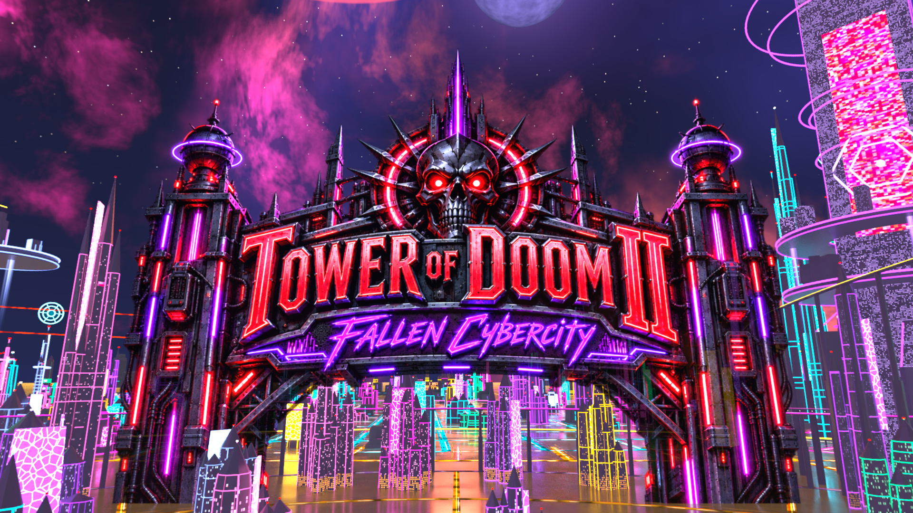
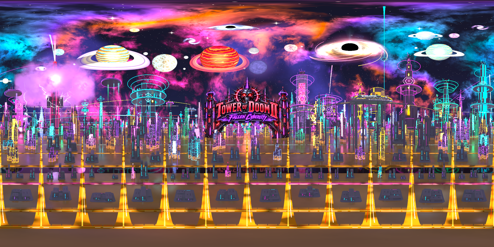

Local art review · Tower of Doom II Cybercity
A clearer city. An ominous gate.
Moderately reduced city depth and secondary sky detail give the title and Skyrail station more room. Retained structures keep their material detail and dark cybercity character.
FULL build verified; ready for the user’s native playtest.
Saved Blender projections. Native BO3 bloom, exposure and appearance remain unplayed.

Final v9 cinematic reveal Saved Blender projection of the finished panorama.Title reveal
Blender azimuth 0°, elevation 11°; same saved camera and display bracket.
City depth
Blender azimuth 126°, elevation 4°; same saved camera and display bracket.
Complete panorama

Final v9 equirectangular panorama Open the finished-HDR Blender preview. Use Rendered viewport shading and Scene World; Numpad 0 returns to the title camera.
Render measurements, source counts and native build receipts
The receipts prove authored content, compiled assets and source inputs. Building-group reductions describe content baked into the panorama, not native entity counts or measured game-performance savings.
| Baked skyline content | 1,838 → 1,222 building groups (33.51% fewer) |
|---|
| Secondary sky | 27 → 18 named groups |
|---|
| Title / station | ominous_gate_1 / cyber_station_1 |
|---|
| Final render | 8192 × 4096; 160 samples; 572.441 seconds |
|---|
| City / whole-sky score | 0.64 / 0.6336461901664734 |
|---|
| Minimum celestial clearance | 3.16° |
|---|
| Final EXR SHA-256 | 0e160e9d1bd09e71e698162cbb7f670f843d26cd4f03099254b49d64033782a8 |
|---|
| Compiled fastfile | 225,465,792 bytes; 2026-09-29T22:20:29-04:00 |
|---|
| Build receipt verified | 2026-09-29T22:22:17.003608 |
|---|
| Source parity | current=True; linked=True |
|---|
Native build receipt · Finish measurements · Exact finish inputs · Final render receipt · Composition counts · Title contract · Station contract · Celestial clearance
Title artwork created with the built-in image-generation tool image_gen.imagegen from the saved reference artwork. Source PNG · Generation prompt · Artwork provenance.